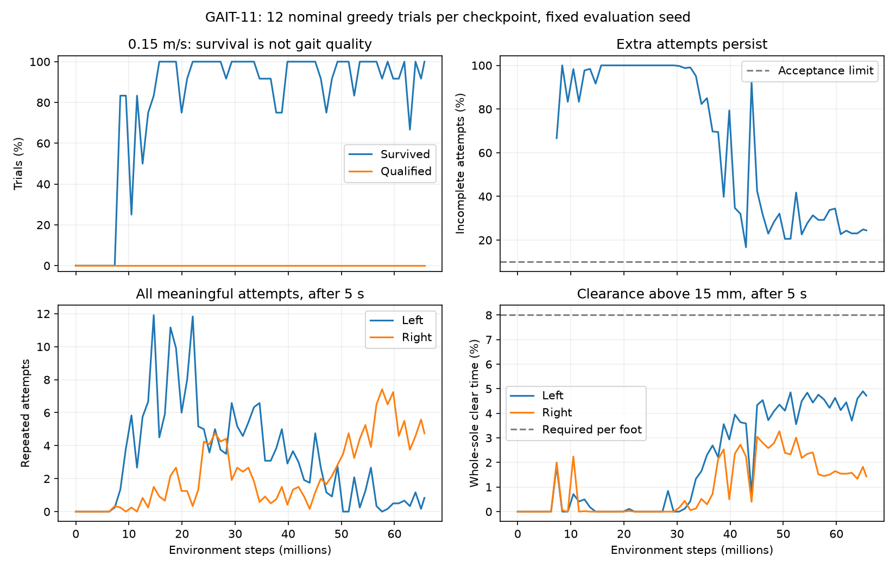

Training completed: 65.65M steps in 7h52m. Start with the two 0.15 m/s clips below. Left foot is blue; right is orange. Both views show the same instant.
Watch the extra right-foot lifts, foot clearance and forward sliding, and whether forward motion stays fluid during foot exchanges. Equal accepted-step counts are partly enforced by the supervisor and do not prove clean walking.
Playback: 1x
Separate final 12-trial evaluation at 0.15 m/s: all survived, 24.44% incomplete attempts, zero qualified gaits. Candidate is the saved diagnostic ranking winner; the final has fewer incomplete attempts and lower slip. Neither is certified.
Open / download video · 49.28M steps. Replay completed at 25.00 s; mean forward speed after 5 s: 0.156 m/s.
Valid steps L/R: [9, 9]; all attempts: [13, 12]; repeated attempts: [3, 2] (after 5 s).
Open / download video · 65.65M steps. Replay completed at 25.00 s; mean forward speed after 5 s: 0.148 m/s.
Valid steps L/R: [10, 10]; all attempts: [10, 14]; repeated attempts: [0, 4] (after 5 s).
Open / download video · 49.28M steps. Replay completed at 25.00 s; mean forward speed after 5 s: 0.096 m/s.
Valid steps L/R: [10, 10]; all attempts: [10, 10]; repeated attempts: [0, 0] (after 5 s).
Open / download video · 65.65M steps. Replay fell at 9.73 s; mean forward speed after 5 s: -0.015 m/s.
Valid steps L/R: [1, 1]; all attempts: [2, 2]; repeated attempts: [0, 0] (after 5 s).
Open / download video · 49.28M steps. Replay fell at 6.97 s; mean forward speed after 5 s: 0.473 m/s.
Valid steps L/R: [0, 0]; all attempts: [2, 0]; repeated attempts: [2, 0] (after 5 s).
Open / download video · 65.65M steps. Replay fell at 2.89 s; mean forward speed after 5 s: no post-5-second window.
Valid steps L/R: [0, 0]; all attempts: [0, 0]; repeated attempts: [0, 0] (after 5 s).

Fresh nominal greedy replays, seed 1000; all three requested speeds shown for both checkpoints, without selecting successful trials. Clips stop at first termination or 25 seconds; no auto-resets. Evaluation uses seed 3103. Transfer clips at 0.10 and 0.20 m/s are outside the sole training target.